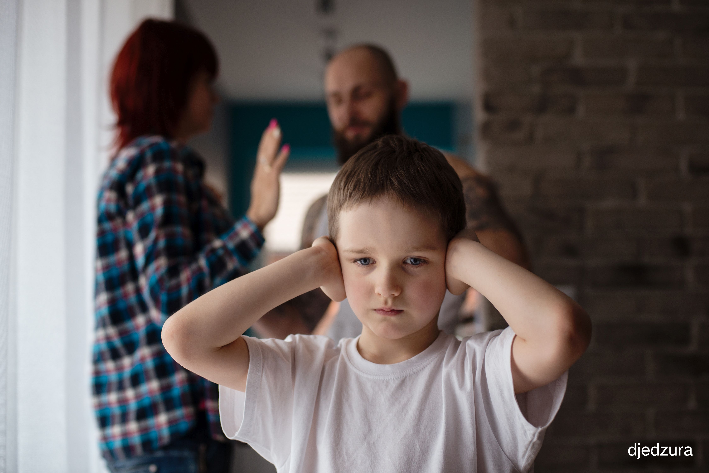

Educational Psychotherapy Thinking
Educational Psychotherapy Thinking
is based on an understanding of:
psychodynamic/psychoanalytical thinking and theory

the interrelationships between a child’s external environments and history, and their inner world of health, genetic factors and fantasy
the child in the context of the family
parental mental health, losses, family dynamics
children’s emotional growth and development
the links between attachment theory, attunement, the development of a secure base, curiosity and learning
learning, behaviour and the 3 insecure attachment patterns
the child in the context of the school
the need for emotional containment both at home and at school – in order that a child can internalise their own capacity for emotional containment and resilience
the links between the lack of emotional containment and the need for defences
neuroscience – the effect of early damage, trauma and neglect on the developing brain, and the triggering of fight/flight behaviours
the emotional aspects of learning and teaching ……including some understanding of: the learning process, inhibitions and risk taking,
an understanding of the teacher or LSA as educational attachment figure
an understanding of the role of the task
an understanding of emotional factors in difficulties with endings, transitions and new beginnings
the health giving value of creativity, symbolic play and metaphor within a secure trusted relationship and place
Educational psychotherapy acknowledges:
 that a child’s behaviour, particularly repeated behaviours and including learning behaviours can have meaning, and can be like an unconscious communication or cry for help – which benefits from thoughtful reflection and understanding, as well as firm boundaries.
that children’s behaviour can evoke strong feelings and reactions in adults
that ‘disturbed children’ can ‘press our buttons’, and we need to be aware of unconsciously colluding with their dysfunctional tendencies.
that some children may need opportunities for localised regression
that a child’s behaviour, particularly repeated behaviours and including learning behaviours can have meaning, and can be like an unconscious communication or cry for help – which benefits from thoughtful reflection and understanding, as well as firm boundaries.
that children’s behaviour can evoke strong feelings and reactions in adults
that ‘disturbed children’ can ‘press our buttons’, and we need to be aware of unconsciously colluding with their dysfunctional tendencies.
that some children may need opportunities for localised regression
Educational Psychotherapy takes into account:
careful observation and attention to repeated patterns, including attachment patterns and triggers
the metaphorical content of the child’s expressive work
our developing understanding of the child’s inner world
the therapeutic relationship, and the feelings evoked by the child
thinking about the external environment and the child's inner world
changes both at home and at school – especially new beginnings, transitions and endings
Educational psychotherapy advocates:
the value of honest shared thinking amongst professionals and carers
the value of honest shared thinking amongst professionals and carers
the need for stress release and thinking through opportunities for teachers and other professional working with very vulnerable children and families
a consultative problem addressing / problem solving approach
a meeting needs approach
a changing vicious circles approach / fostering virtuous circles approach
helpful non-collusive responses to children’s behaviour
fostering nurturing opportunities at school and home
firm effective boundaries and understanding opportunities
helpful ways of relating to / dealing with children
empathic dyadic regulation for children who can’t self regulate
Such thinking and mutual support gives rise to:
-for school staff
decreased stress and helplessness
increased understanding and empathic responsiveness
valuing of each others skills and roles
creative thinking, and hope
a supportive caring ethos which is anti labelling
respect for quality attention, listening and observation
careful thinking about relationships, boundaries and roles
the development of personal and professional skills and capacities
-for children: an increase in
emotional growth and learning
resiliance
capacity for self regulation
the ability to ask for help if neccesary
the capcity to play and talk through worries